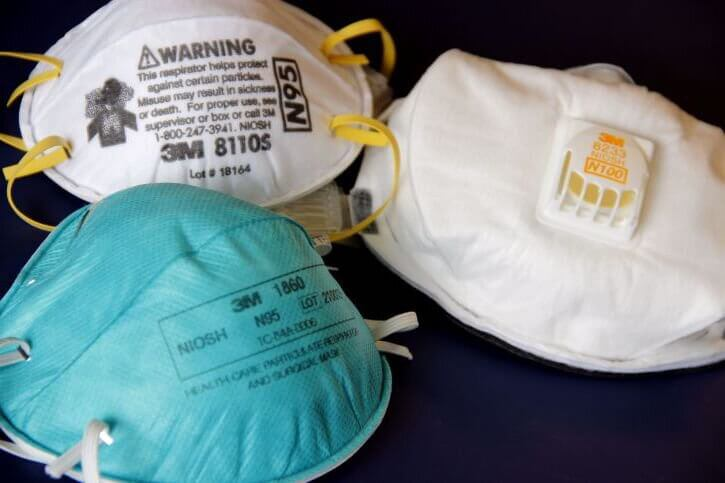
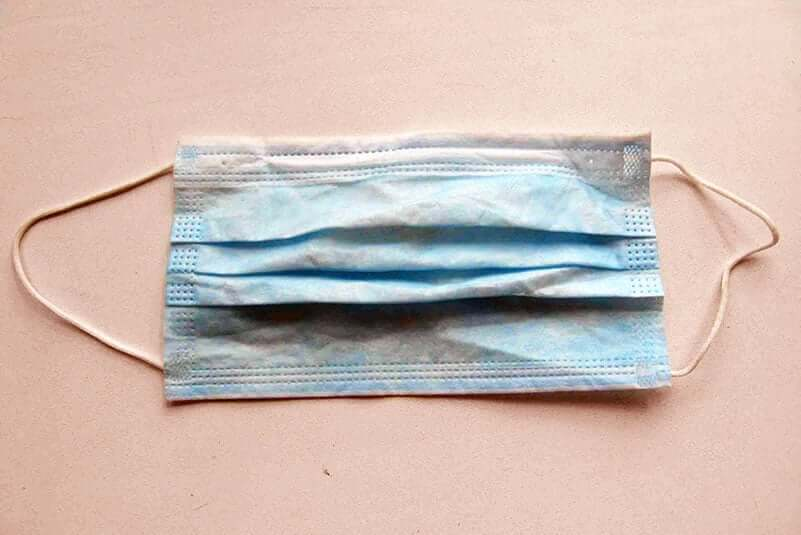

#findthemasks
Jump to: donate/add a site
America’s frontline healthcare workers are treating COVID19 patients without adequate protective gear, risking their lives! They have taken to Twitter on #GetMePPE to ask for help:
NYC. Mother of two, double frontline MD couple. Don’t make us orphan our two toddlers. Running out of masks, eye protection and gloves at work. @VP @NYGovCuomo #GetMePPE @choo_ek pic.twitter.com/siI9TegNOL
— Cornelia Griggs (@CorneliaLG) March 18, 2020
This is what it looks like in the ICU. Rows of brown bags each labeled with the name of a nurse or doctor . We are told to keep and reuse these masks , which under normal conditions would be thrown out each time we leave the isolation room. #GetMePPE pic.twitter.com/8blP8LzAGv
— Victoria Williams (@V_Q_W) March 19, 2020
I work Urgent Care, seeing patients with flu-like symptoms all day long. We have been told that a surgical mask is all we "need" to protect us from #COVID19. #GetMePPE pic.twitter.com/trIu40JSpA
— Jess HT MD (@JessHTMD) March 17, 2020
We need to help the helpers, right now.
We need to find the masks.
Look in your basement, your emergency kit, your bug out bag, your workbench for N95 masks. They look like this:
If you find surgical masks, those are also in short supply, and in many places are being used in place of N95s. They look like this:
All of these masks can save lives now if you get them into the hands of healthcare workers.
Disposable booties, safety goggles, and disposable suits are also in short supply. If you have these things or know someone who might (HVAC installers? Construction workers?) please share this site with them!
How to donate
- Look at our list of sites below. You can filter by state or supplies needed.
- If there's a site near you, drop off following their instructions.
- If you are donating open packages, please put them in a ziploc bag with a note saying whether they have been used, whether anyone in your household has been sick or travelled outside the country, and the expiration date if known.
- If there's not a site near you, visit our friends at ppelink.org to let them know what you have available.
To add a donation site, update information, or request we take down information, please fill in this form.
To add a donation site, update information, or request we take down information, please fill in this form.
Got a comment or suggestion not related to data updates? Want to help? contact@findthemasks.com or join us on our Github.
made with <3 in Seattle
who we are